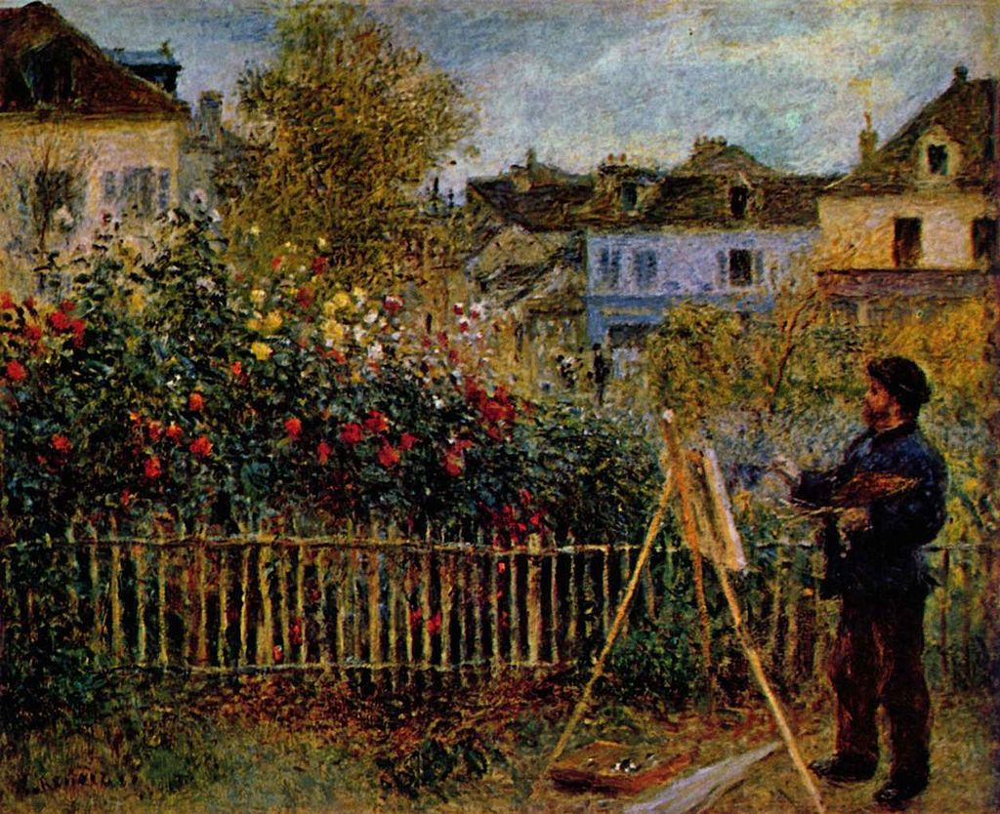

<head>
<meta charset="UTF-8" />
<meta name="keywords" content="drawing, painting" />
<meta name="description" content="drawings by Sunjy" />
<title>Sunjy</title>
<link rel="shortcut icon" type="image/x-icon" href="../../mImages/mCommon/favicon.ico" media="screen" />
<link rel="stylesheet" type="text/css" href="../../mCsses/mCommon/mCssA.css" />
<link rel="stylesheet" type="text/css" href="../../mCsses/mCommon/mCssB.css" />
<link rel="stylesheet" type="text/css" href="../../mCsses/mCommon/mCssC.css" />
<link rel="stylesheet" type="text/css" href="../../mCsses/mCommon/mCssD.css" />
<link rel="stylesheet" type="text/css" href="../../mCsses/mContent/mCssA.css" />
<link rel="stylesheet" type="text/css" href="../../mCsses/mContent/mCssB.css" />
<link rel="stylesheet" type="text/css" href="../../mCsses/mContent/mCssC.css" />
<link rel="stylesheet" type="text/css" href="../../mCsses/mContent/mCssD.css" />
</head>
<script type="text/javascript" src="../../mScripts/mContent/mContentAA.js" /></script>
<script type="text/javascript" src="../../mScripts/mContent/mContentAB.js" /></script>
<script type="text/javascript" src="../../mScripts/mContent/mContentAC.js" /></script>
<script type="text/javascript" src="../../mScripts/mContent/mContentAD.js" /></script>
<script type="text/javascript"></script> 
<script type="text/javascript">
document.write('<div class="mImgAbsolute"></div>');
/*
document.write('<p class="mFontSizeBColor" />From a white paper...</p>');
document.write('<table class="center"><tr><td>');
document.write('');
document.write('</td></tr></table>');
*/
</script>


<script type="text/javascript">
document.write('<p class="mFontSizeBColor" />Claude Monet Painting in His Garden at Argenteuil</p>');
document.write('<p class="mFontSizeSColor" />“Claude Monet Painting in His Garden at Argenteuil” by Pierre-Auguste Renoir depicts the famous impressionist Monet at his painting easel painting in his garden in Argenteuil. From 1871 to 1878, Claude Monet lived at Argenteuil, a village on the right bank of the Seine river near Paris, and a popular Sunday-outing destination for Parisians, where he painted some of his best-known works.<br><br>The two friends Claude Monet and Pierre-Auguste Renoir, painted their first Impressionist paintings together at La Grenouillère in 1869 when they were both impoverished artists. This painting of Monet by Renior was rendered four years later as they continued to struggle for recognition.<br><br>One year after this painting, their fortunes reached a turning-point as the two friends came together with others for the first Impressionist Exhibition in Paris.<br><br>The first Impressionist exhibition was held in 1874. The primary purpose of the participants was not so much to promote a new style but to free themselves from the constraints of the Salon de Paris. The exhibition allowed artists to show their work without the interference of a jury.<br><br>Renoir chaired the hanging committee and did most of the work himself, as other members failed to present themselves. In addition to “Impression, Sunrise,” Monet, presented four oil paintings and seven pastels. Renoir exhibited six oils and one pastel. Altogether, 165 works were shown in the exhibition by artists that included Morisot, Renoir, Degas, Pissarro, Cézanne, and Guillaumin.<br></p>');
document.write('<table class="center" /><tr><td>');
document.write('<br>The two friends Claude Monet and Pierre-Auguste Renoir, painted their first Impressionist paintings together at La Grenouillère in 1869 when they were both impoverished artists. This painting of Monet by Renior was rendered four years later as they continued to struggle for recognition.<br><br>One year after this painting, their fortunes reached a turning-point as the two friends came together with others for the first Impressionist Exhibition in Paris.<br><br>The first Impressionist exhibition was held in 1874. The primary purpose of the participants was not so much to promote a new style but to free themselves from the constraints of the Salon de Paris. The exhibition allowed artists to show their work without the interference of a jury.<br><br>Renoir chaired the hanging committee and did most of the work himself, as other members failed to present themselves. In addition to “Impression, Sunrise,” Monet, presented four oil paintings and seven pastels. Renoir exhibited six oils and one pastel. Altogether, 165 works were shown in the exhibition by artists that included Morisot, Renoir, Degas, Pissarro, Cézanne, and Guillaumin.<br>" />');
document.write('</td></tr></table>');
</script>


